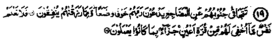
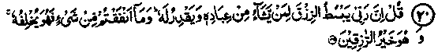
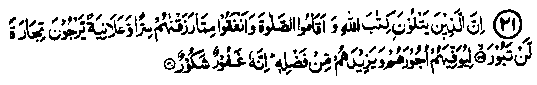
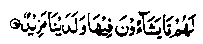
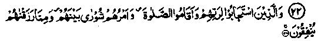
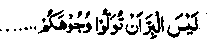
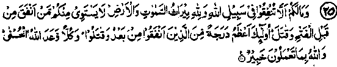

Chapter One · Section (a): Ayaat on the virtues of spending for the cause of Allah
7. Rewards of spending for good causes

19. Who forsake their beds to cry unto their Lord in fear and hope and spend of what We have bestowed on them. No soul knoweth what is kept hid for them of joy, as a reward for what they used to do. (as-Sajdah: 16 -17).
Note: Scholars of ‘Tafseer’ have expressed two different opinions about "Keep away from their beds at night". One takes it as the period between ‘Maghrib’ and ‘Isha’ Salaat; most Traditions confirm this version. Anas Radhiallaho anho has said that this Ayat was revealed concerning the Ansaar, because they did not go to their homes after Maghrib Salaat and stayed on till after they had performed the Isha Salaat with Rasulullah Sallallaho alaihe wasallam. Yet another Hadith quoted by Anas Radhiallaho anho states that a number of Muhajireen were in the habit of performing Nafl after Marghrib till Isha and this Ayat was revealed concerning them. Bilal Radhiallaho anho says, "We used to remain seated after Maghrib Salaat and a group of Sahabah kept themselves busy in Salaat, till Isha, and it was regarding them that this Ayat was revealed." Abdullah Ibne Eisa Radhiallaho anho has also confirmed the statement regarding the Ansaar that they performed Nail Salaat between Maghrib and ‘Isha’. Another opinion relates it to Tahajjud Salaat. Ma‘az Radhiallaho anho has quoted Rasulullah Sallallaho alaihe wasallam as saying that this Ayat refers to standing up at night. Another Hadith, quoted by Mujahid Rahmatullah Alaihe, says that Rasulullah Sallallaho alaihe wasallam talked about standing in Salaat at night and tears rolled down from his eyes. At that time, he recited this particular Ayat. Abdullah Ibne Masood Radhiallaho anho has said that, according to the Taurah, for those who remain away from their beds at night (for standing in Salaat), Haq Ta'ala Shanohu has prepared bounties which no eye has ever seen, nor any ear heard, nor any thought thereof crossed any mind; and no angel, nor any Nabi or Rasul knows about them; and the same has been referred to in this Ayat of the Holy Qur’an.
Abu Hurairah Radhiallaho anho has quoted Rasulullah Sallallaho alaihe wasallam as saying that Allah Ta‘ala has prepared such bounties for the pious as no eye has ever seen, no ear ever heard of, nor have those things crossed anybody’s mind. Hundreds of instances have been quoted, in the "Raudhatur-Riyaheen" and similar books, of such people who used to spend their nights in Salaat, crying and weeping in remembrance of their Lord. Imaam Abu Hanifah Rahmatullah alaihe, for forty years, performed his morning Salaat with the ‘Wudu’ for the previous ‘Isha’ Salaat. His is a well-known example, which cannot be denied. It is also commonly known that he used to complete two readings of the Qur’an in a day during the month of Ramadhan, one at night and one during the day. Uthman Radhiallaho anho is well-known for keeping vigil, reciting the whole of the Qur’an in a single Rak‘at. Umar Radhiallaho anho after returning from Isha often spent the rest of the night in ‘Nafl’ Salaat. It was a usual practice of Tamim Dari Radhiallaho anho, a well known Sahabi, to recite the whole Qur’an in one Rak‘at; sometimes he repeated a single Ayat the whole night. Shaddad Ibne Auf Radhiallaho anho used to lie in bed to sleep but, after turning from side to side a few times, would get up saying, "O Allah! my sleep has fled away due to the fear of Jahannam." He used to spend the whole night praying. Umair Radhiallaho anho used to offer a thousand Raka'at of ‘Nafl’ Salaat everyday and recited ‘Tasbeeh’ a hundred thousand times daily. Uwais Qarni Rahmatullah alaihe is a famous Tabi'ee, of whom Rasulullah Sallallaho alaihe wasallam has spoken highly and even asked his people to request him for Du‘aa. He would say one night, "This night is for Ruku" and spend the whole night standing in Ruku. On another night, he would say, "This night is for Sajdah," and spend it lying prostrate in Sajdah. (Iqamat-ul-Hujjah)
In short, so numerous are the instances of such pious persons spending the whole night, all their lives pining in the remembrance of their beloved Lord, that it is practically impossible to encompass them all. A poet said:
"We shed tears by night, remembering our beloved; while asleep, we dream of Him alone!"
At the end, the author (Shaikhul Hadith Muhammad Zakariyya Rahmatullah alaihe) says, "Would that Allah Ta‘ala grants this humble author a little bit of their zeal for devotions"!

20. Say: "Lo! my Lord enlarges the provision for him whom He wills of His bondsmen and narrows it. And whatsoever you spend (for the cause of Allah), He will replace it. And He is the best of Providers", (as-Sabaa: 39)
Note: Both prosperity and poverty are from Allah Ta'ala. To restrict spending will not bring prosperity, nor excessive spending cause poverty. On the contrary, whatever is spent for the cause of Allah shall definitely be compensated in Akhirah and in this life also. One Hadith says, "The angel Jibra’il AlaiHissalam has quoted Allah Jalla Shanohu as saying, "My bondsmen, I have bestowed My bounties upon you, out of sheer Benevolence, and I have asked you for loan. -So, whosoever gives Me loan, of his own accord, I shall requite him readily in this world and also preserve it for him in the Hereafter; as for him who does not give Me of his own accord, I shall take back forcibly what I have granted him. But if he observes patience (after the loss) hoping to be rewarded for that, I shall make it incumbent upon Myself to shower blessings upon him, shall record his name among the properly guided, and grant him vision of Myself (on the Day of Resurrection)". (Kanz)
What a great favour of Allah Ta'ala'. He has fixed a reward even for him who does not spend of his own accord but remains patient when some of his possessions are forcibly taken away from him, though such a one does not deserve any credit as he is not willing to give away anything in Sadaqah. But there is no limit to the bounties of Allah Ta'ala conferred on men. Hassan Radhiallaho anho says that Rasulullah Sallallaho alaihe wasallam, explaining this Ayat, said, "Whatever you spend on your family and dependents, avoiding extravagance and miserliness, will be recorded as spending in the cause of Allah." Jabir Radhiallaho anho has quoted Rasulullah Sallallaho alaihe wasallam as saying, "Anything spent on one’s family, as permitted by Shariah, avoiding expenditure on buildings or on sinful acts, has a return from Allah Subhanahu wa Ta'ala". Another Hadith, from the same source, says that every act of kindness counts are Sadaqah; anything spent on oneself and one’s family will also count as Sadaqah; and all that is spent in accordance with Shariah and to protect one’s honour shall count as Sadaqah. Allah undertakes to give good return for all that, except what is spent on forbidden things or on construction.
A full version of the same has also been given in Durre Manthur by Allama Suyooti Rahmatullah alaihe. Abu Hurairah Radhiallaho anho has quoted Rasulullah Sallallaho alaihe wasallam as saying, "Two angels pray every morning: one implores Allah to grant a befitting return to those who spend and the other prays that the property of the one who hoards should be destroyed." This subject has been treated under the Hadith given at Sr.No.2 below.
Experience also shows that the door of Divine favours is permanently open for those who are generous in spending, while calamities like illness, litigation, theft, etc., cause in a few days, heavy losses in the wealth which the hoarders have amassed in years! Moreover if, due to some good deed of a person, his hoarded wealth is saved from a calamitous loss in his lifetime, his unworthy heirs will squander it in a few months after his death. Hazrat Asmaa Radhiallaho anha narrates that Rasulullah Sallallaho alaihe Wasallam said to her, "Spend generously! and do not count your hoarded money, lest Allah Ta'ala should also grant you calculated amounts; and do not hoard money, lest Allah should also hoard to deprive you; but give away as much as you can",
Once Rasulullah Sallallaho alaihe wasallam visited Bilal Radhiallaho anho and saw that he had a pile of dates lying beside him. Rasulullah said, "What is this?" He replied, "It is something I have stored for my future needs." At this, Rasulullah Sallallaho alaihe wasallam said, "Are you not afraid to see, on account of it, the smoke in the fire of Jahannam? Spend liberally, O Bilal, and do not fear loss in your provision from the Lord of the Throne (Arsh).”
This Hadith warns against storing up things for one’s future needs, and says that such people shall see the fire of Jahannam. As a matter of fact, the warning was befitting for Bilal Radhiallaho anho who enjoyed a respected position and Rasulullah Sallallaho alaihe wasallam did not approve of his worrying for tomorrow’s needs, as it implied a lack of complete trust in Allah Ta'ala Who provides for the needs of tomorrow as He provides for today. Everybody has a specific position and Allah demands excellence in behaviour varying from man to man. A well-known maxim says: "What is good enough in a common man, as virtue, might seem a shortcoming in those who have attained a high position in nearness to Allah Ta'ala." Many instances can be quoted to illustrate this point. Clearly, wealth is not a thing worth keeping and least for hoarding. It has been created only for spending, least on oneself and most on others, and therein lies its true benefit! Nevertheless, the most important thing to realise is the motive for an action, with which it is performed. The famous Hadith, in this connection, is:
"The value of any action depends on the intention". (Bukhari)
Spending even on oneself or one’s kinsmen or strangers is bound to bring Divine blessings and benefits, if it is done with the intention to please Allah Ta'ala But with wrong intention, like publicity or fame, etc., the good deed would be ruined and a misdeed, instead, be established, there being no question of any type of Barakah (Divine blessings) accruing from it.

21. Surely those who recite the book of Allah and establish Salaat, and spend of that which We have bestowed on them, secretly and openly, may look forward to an imperishable gain; that He will reward them and increase them of His bounties. Surely, He is Forgiving, and a Generous Patron, (al-Faatir: 29-30)
Note: Qatadah Rahmatullah alaihe says that’ .‘imperishable gain’ implies Jannah, which will never be destroyed nor become valueless and ‘increase of His bounties’ refers to what is contained in another Ayat of the Holy Qur’an. (Durree Manthur)
The Ayat quoted by Qatadah Rahmatullah alaihe occurs in Surah ‘Qaaf; it reads:

There (in Jannah) they shall have all they desire and there is ‘more’ with Us”. (Which We shall grant them). (Qaaf: 35)
The Ahadith explaining () "More" mention marvellous things which demand a detailed discussion. Of these the best is that ‘More’ signifies an assurance by Allah, to be given to the inhabitants of Jannah, that Allah is pleased with them, and His granting them the bliss of having a vision of Himself, which will be repeatedly granted to the most fortunate ones. What a great reward in return for a few simple acts involving little labour, namely, spending generously in the path of Allah, establishing Salaat and being constant in recitat-ion of the Qur’an, which is an enjoyable experience even in this life! A few examples of the blessings of constant recitation from the Glorious Qur’an have been mentioned in the ‘Faza’il-e-Qur’an’, which should be carefully studied.

22. And those who answer the call of their Lord, and establish Salaat, and whose affairs are a matter of counsel among themselves, and who spend of what We have bestowed upon them, (such people shall enjoy bounties of Allah which shall be far superior and more lasting than worldly things) (ash-Shuraa: 38).
Note: The Ayat of Ruku’ 4 of ‘as-Shuraa’ (of which the above mentioned Ayat forms a part) recounts various attributes of the perfectly pious people; and contains the promise that Allah Ta'ala has reserved for them rewards (in Akhirah) which are far superior to the bounties of this life. The Ulama have said that the Ayat:
"For those who believe and put their trust in Allah" and the subsequent Ayaat contain an account of the special attributes of the ‘Khulafa-e-Rashideen’ Radhiallaho anhum and a prophecy about the conditions that were to prevail in the respective times (in broad terms) of Abu Bakr, Umar, Uthman, and Ali Radhiallaho anhum, and even in the times of Hasan and Husain Radhiallaho anhuma, with an implicit reference to the order of their succession. The Ayaat also forewarn against certain trying circumstances that the Khulafa had to face in the respective periods of their Caliphate. Moreover, there is the promise of abundant reward in the Akhirah for the Khulafa-e-Rashideen. The generality of expression extends that promise to all those who strive to cultivate these qualities in themselves. Would that we Muslims had love for Deen and a zeal to search out, in the Qur’an and Ahadith those high morals and virtues, and adopted them! But alas! Our morals continue to deteriorate. In fact, they have fallen so low that non-Muslims have developed an aversion for Islam. Unfortunately, the non-Muslims do not realise that Muslims in general have given up Islamic morals; so, whatever conduct they see in Muslims today, they consider it to be Islamic morality! So, we beseech Allah for help!
23. And in their wealth the beggar and the outcast had due share. (az-Zariyaat: 19)
Note: This is in continuation of the attributes and virtues of those who are blessed with perfect faith. The special thing about such people is that they give charity so frequently and regularly as if it was their bounden duty. Ibne Abbas Radhiallaho anho says that the Ayat, ‘in their wealth’ indicates a specific portion, other than Zakaat, out of which they spend on relatives, entertain their guests and help the destitute. Mujahid Rahmatullah alaihe says that this implies spending in addition to Zakaat. Ibrahim Rahmatullah. alaihe says that it means, "They always believe that others have a right in their property in addition to Zakaat’. Ibne Abbas Radhiallaho anho has said that the ‘Mahroom’ (deprived ones) are those wretched people who have desire or need for things of this life but remain without them and yet they do not beg. Another Hadith says that they are those who get no share from the Bait-ul-maal (public treasury).
Aishah Radhiallaho anha has said that the ‘deprived one’ is he, who is in poverty due to insufficient income. Abu Qalaba has said that there was a man in Yamamah, whose total belongings were swept away in a flood. One of the Sahabah Radhiallaho anho said about him that this man was a deprived person (Mahroom) and that he must be helped. Abu Hurairah Radhiallaho anho has quoted Rasulullah Sallallaho alaihe wasallam as saying, "The poor are not those who beg for a morsel from door to door; rather the really poor person is he who has insufficient means to meet his legitimate needs but people are not aware of his condition warranting help; he is the one who is truly deprived (Mahroom)".
When Fatimah Binte Qais Radhiallaho anha asked Rasulullah Sallallaho alaihe wasallam about the meaning of this Ayat Rasulullah said that there were obligations in respect of property beside paying Zakaat. (This particular Hadith will be repeated at Serial No. 16 under Ahadith) Rasulullah Sallallaho alaihe wasallam recited the Ayat

A part of the above has been quoted at No. 2 above, in which payment of Zakaat has been mentioned separately from charity to the poor. Therein is an encouragement to spend abundantly for the cause of Allah, apart from what is given in Zakaat. But it is our misfortune that nowadays, we feel distressed even while giving Zakaat. There are many Muslims who do not care to give Zakaat but would even pawn their homes to celebrate absurd festivals and marriages, which amounts to waste of wealth here and retribution in the Hereafter.
24. Believe in Allah and His Rasul, and spend (for the cause of Allah) of that whereof He has made you trustees; and such of you as believe and spend (for the cause of Allah) theirs will be a great reward, (al-Hadeed: 7)
Note: The word, "Trustee" is meant to convey that the wealth you possess belonged to someone else and it is with you only for a few days till your eyes are permanently closed, when it will pass on to others; therefore, it is a useless exercise to collect it bit by bit. Your wealth is disloyal, it does not stay permanently with anyone nor ever will. Lucky is he who can devise a way to keep it permanently with himself and that is to deposit it in the treasury of Allah Jalla Shanohu where there will be no fear of loss or its being taken away, whereas in this life fear and anxiety of a total loss always exist. The Divine Power has repeatedly demonstrated that magnificent palaces, great estates and huge properties are, in an instant, taken away from their owners and given to others! The sole owners of buildings and houses yesterday, see with their own eyes others in possession of them today! Yet no one seems to take heed!

25. What has happened to you that you do not spend in the path of Allah; when all the heavens and the earth are Heritage of Allah? Those who spent (for the cause of Allah) before the conquest (of Makkah) and fought, are not comparable to those who did not, they are more exalted than those who spent and fought afterwards. And Allah has promised good reward for all. And Allah is aware of what you do. (al-Hadeed: 10).
Note: The Heritage of Allah Ta'ala means that, when all mankind meet their end, each and everything (including the total wealth of the earth and heavens) will be under the authority of the Divine Entity, the Creator, Who Alone will be there. Since we all have to leave all our possessions behind, why not spend them happily with our hands and receive a befitting return in the Akhirah? Thereafter the Ayat mentions a caution about the special status of those who fought and spent for the cause of Allah before the conquest of Makkah. They are far superior to those who spent and fought after that great event; the reason being that the need then was the greatest and, therefore, spending in those conditions had much greater value than on other occasions; hence a much greater reward for it.
This point is further explained at No. 13 of the Ahadith. People must therefore look for such occasions, when the needs of other people are pressing, seize the opportunity of spending on them and consider it a great blessing. Allah Ta'ala Shanohu, on that basis, has differentiated between the various Sahabah, giving a superior reward to those who spent before the conquest of Makkah, it being a period of grave crisis. Accordingly, one must bear in mind that to help others at the time of their urgent need will be an act of higher value.
26. Who is he that will lend unto Allah a goodly loan that Allah Ta'ala will increase and for him there is an excellent reward. (al-Hadeed: 11).
Note: A similar point has been made in the Ayat given at No. 5 above. The repetition is meant simply to lay emphasis on the subject matter. The Holy Qur’an repeatedly exhorts us that now is the time to spend in the path of Allah, and to do it as much as we can. There will be nothing but remorse after death.
27. Indeed the men who give as Sadaqah and the women who give as Sadaqah (all of them) are lending a goodly loan to Allah; the return for them will be increased; and for them shall be an exquisite reward. (al-Hadeed: 18)
Note: The Ayat means that those who spend as Sadaqah, in fact, lend a loan to Allah Ta'ala and, like any loan, this will also be returnable to the givers, but much increased at the time when their need will be greatest and most compelling; they will rather be without resources except for the befitting return of that loan from Allah Ta'ala. In this life, people save up bit by bit for future needs like wedding of their children or any other needs. Particularly for future weddings, they are constantly worried, keep buying dresses and ornaments and other things appropriate for those occasions, so as to avoid any difficulty at that time. The Day of Akhirah will be the day of our greatest need and most urgent necessity, but with no chance of buying, borrowing or even begging from any source. For such a difficult and momentous occasion, one must save as much as is possible. This would hardly be a strain here, but would bring a return of the size of mountains.